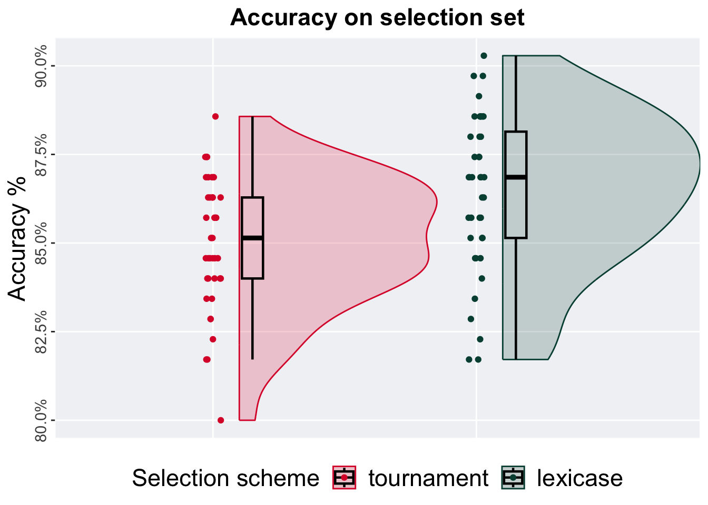

Chapter 13 Task 168784
We present the results of our analysis of task 168784 with the different selection set splits used in our study.
13.1 5%
13.1.1 Test accuracy
Summary statistics for the testing performance of the selection schemes at the 5% selection set split:
## # A tibble: 2 × 8
## selection count na_cnt min median mean max IQR
## <fct> <int> <int> <dbl> <dbl> <dbl> <dbl> <dbl>
## 1 tournament 40 0 0.728 0.797 0.795 0.836 0.0423
## 2 lexicase 40 0 0.692 0.792 0.785 0.846 0.0628The permutation test revealed that the results are:
tournament_results <- filter(task_data, split == '5%' & selection == 'tournament')
lexicase_results <- filter(task_data, split == '5%' & selection == 'lexicase')
permutation_test(tournament_results$testing_performance,
lexicase_results$testing_performance,
seed = 111,
alternative = "t")## [1] "observed_diff: 1.31597665591326"
## [1] "lower: -2.00194003515967"
## [1] "upper: 2.00194017197189"
## [1] "fail to reject null hypothesis"
## [1] "p-value: 0.19036"13.1.2 Selection set accuracy
Summary statistics for the testing performance of the selection schemes at the 5% selection set split:
## # A tibble: 2 × 8
## selection count na_cnt min median mean max IQR
## <fct> <int> <int> <dbl> <dbl> <dbl> <dbl> <dbl>
## 1 tournament 40 0 0.807 0.875 0.867 0.920 0.0341
## 2 lexicase 40 0 0.841 0.909 0.906 0.966 0.0455The permutation test revealed that the results are:
tournament_results <- filter(task_data, split == '5%' & selection == 'tournament')
lexicase_results <- filter(task_data, split == '5%' & selection == 'lexicase')
permutation_test(tournament_results$training_performance,
lexicase_results$training_performance,
seed = 112,
alternative = "l")## [1] "observed_diff: -5.79635757388812"
## [1] "permutation_diffs[0.05 * n_permutations]: -1.66803276720504"
## [1] "reject null hypothesis"
## [1] "p-value: 1e-05"13.2 10%
13.2.1 Test accuracy
Summary statistics for the testing performance of the selection schemes at the 5% selection set split:
## # A tibble: 2 × 8
## selection count na_cnt min median mean max IQR
## <fct> <int> <int> <dbl> <dbl> <dbl> <dbl> <dbl>
## 1 tournament 40 0 0.759 0.815 0.811 0.851 0.0359
## 2 lexicase 40 0 0.749 0.808 0.802 0.841 0.0359The permutation test revealed that the results are:
tournament_results <- filter(task_data, split == '10%' & selection == 'tournament')
lexicase_results <- filter(task_data, split == '10%' & selection == 'lexicase')
permutation_test(tournament_results$testing_performance,
lexicase_results$testing_performance,
seed = 113,
alternative = "t")## [1] "observed_diff: 1.6796503157697"
## [1] "lower: -1.99461117576958"
## [1] "upper: 1.99461096878831"
## [1] "fail to reject null hypothesis"
## [1] "p-value: 0.09392"13.2.2 Selection set accuracy

Summary statistics for the testing performance of the selection schemes at the 5% selection set split:
## # A tibble: 2 × 8
## selection count na_cnt min median mean max IQR
## <fct> <int> <int> <dbl> <dbl> <dbl> <dbl> <dbl>
## 1 tournament 40 0 0.8 0.851 0.850 0.886 0.0229
## 2 lexicase 40 0 0.817 0.869 0.865 0.903 0.0300The permutation test revealed that the results are:
tournament_results <- filter(task_data, split == '10%' & selection == 'tournament')
lexicase_results <- filter(task_data, split == '10%' & selection == 'lexicase')
permutation_test(tournament_results$training_performance,
lexicase_results$training_performance,
seed = 114,
alternative = "l")## [1] "observed_diff: -3.1433131617963"
## [1] "permutation_diffs[0.05 * n_permutations]: -1.68838346854448"
## [1] "reject null hypothesis"
## [1] "p-value: 0.00117"13.3 50%
13.3.1 Test accuracy
Summary statistics for the testing performance of the selection schemes at the 5% selection set split:
## # A tibble: 2 × 8
## selection count na_cnt min median mean max IQR
## <fct> <int> <int> <dbl> <dbl> <dbl> <dbl> <dbl>
## 1 tournament 40 0 0.790 0.815 0.817 0.851 0.0256
## 2 lexicase 40 0 0.769 0.810 0.809 0.856 0.0269The permutation test revealed that the results are:
tournament_results <- filter(task_data, split == '50%' & selection == 'tournament')
lexicase_results <- filter(task_data, split == '50%' & selection == 'lexicase')
permutation_test(tournament_results$testing_performance,
lexicase_results$testing_performance,
seed = 115,
alternative = "g")## [1] "observed_diff: 1.84018428427782"
## [1] "permutation_diffs[0.95 * n_permutations]: 1.65248732220136"
## [1] "reject null hypothesis"
## [1] "p-value: 0.03586"13.3.2 Selection set accuracy
Summary statistics for the testing performance of the selection schemes at the 5% selection set split:
## # A tibble: 2 × 8
## selection count na_cnt min median mean max IQR
## <fct> <int> <int> <dbl> <dbl> <dbl> <dbl> <dbl>
## 1 tournament 40 0 0.773 0.798 0.797 0.822 0.0152
## 2 lexicase 40 0 0.774 0.798 0.797 0.819 0.0155The permutation test revealed that the results are:
tournament_results <- filter(task_data, split == '50%' & selection == 'tournament')
lexicase_results <- filter(task_data, split == '50%' & selection == 'lexicase')
permutation_test(tournament_results$training_performance,
lexicase_results$training_performance,
seed = 116,
alternative = "t")## [1] "observed_diff: -0.104445353599085"
## [1] "lower: -1.98629617822013"
## [1] "upper: 1.98629465100794"
## [1] "fail to reject null hypothesis"
## [1] "p-value: 0.91335"13.4 90%
13.4.1 Test accuracy
Summary statistics for the testing performance of the selection schemes at the 5% selection set split:
## # A tibble: 2 × 8
## selection count na_cnt min median mean max IQR
## <fct> <int> <int> <dbl> <dbl> <dbl> <dbl> <dbl>
## 1 tournament 40 0 0.769 0.821 0.818 0.846 0.0205
## 2 lexicase 40 0 0.528 0.803 0.773 0.841 0.0679The permutation test revealed that the results are:
tournament_results <- filter(task_data, split == '90%' & selection == 'tournament')
lexicase_results <- filter(task_data, split == '90%' & selection == 'lexicase')
permutation_test(tournament_results$testing_performance,
lexicase_results$testing_performance,
seed = 117,
alternative = "g")## [1] "observed_diff: 3.13974144978373"
## [1] "permutation_diffs[0.95 * n_permutations]: 1.66080565220089"
## [1] "reject null hypothesis"
## [1] "p-value: 0.00024"13.4.2 Selection set accuracy
Summary statistics for the testing performance of the selection schemes at the 5% selection set split:
## # A tibble: 2 × 8
## selection count na_cnt min median mean max IQR
## <fct> <int> <int> <dbl> <dbl> <dbl> <dbl> <dbl>
## 1 tournament 40 0 0.678 0.711 0.709 0.736 0.0207
## 2 lexicase 40 0 0.674 0.714 0.711 0.732 0.0245The permutation test revealed that the results are:
tournament_results <- filter(task_data, split == '90%' & selection == 'tournament')
lexicase_results <- filter(task_data, split == '90%' & selection == 'lexicase')
permutation_test(tournament_results$training_performance,
lexicase_results$training_performance,
seed = 118,
alternative = "t")## [1] "observed_diff: -0.557779127920981"
## [1] "lower: -1.99247802744732"
## [1] "upper: 1.99247866659252"
## [1] "fail to reject null hypothesis"
## [1] "p-value: 0.5791"13.5 95%
13.5.1 Test accuracy
Summary statistics for the testing performance of the selection schemes at the 5% selection set split:
## # A tibble: 2 × 8
## selection count na_cnt min median mean max IQR
## <fct> <int> <int> <dbl> <dbl> <dbl> <dbl> <dbl>
## 1 tournament 40 0 0.749 0.808 0.805 0.846 0.0256
## 2 lexicase 40 0 0.467 0.792 0.764 0.846 0.0628The permutation test revealed that the results are:
tournament_results <- filter(task_data, split == '95%' & selection == 'tournament')
lexicase_results <- filter(task_data, split == '95%' & selection == 'lexicase')
permutation_test(tournament_results$testing_performance,
lexicase_results$testing_performance,
seed = 119,
alternative = "g")## [1] "observed_diff: 2.70614045169234"
## [1] "permutation_diffs[0.95 * n_permutations]: 1.66331762825335"
## [1] "reject null hypothesis"
## [1] "p-value: 0.00225"13.5.2 Selection set accuracy
Summary statistics for the testing performance of the selection schemes at the 5% selection set split:
## # A tibble: 2 × 8
## selection count na_cnt min median mean max IQR
## <fct> <int> <int> <dbl> <dbl> <dbl> <dbl> <dbl>
## 1 tournament 40 0 0.627 0.667 0.668 0.703 0.0324
## 2 lexicase 40 0 0.626 0.674 0.675 0.711 0.0282The permutation test revealed that the results are:
tournament_results <- filter(task_data, split == '95%' & selection == 'tournament')
lexicase_results <- filter(task_data, split == '95%' & selection == 'lexicase')
permutation_test(tournament_results$training_performance,
lexicase_results$training_performance,
seed = 120,
alternative = "t")## [1] "observed_diff: -1.5828085773587"
## [1] "lower: -1.99931288855232"
## [1] "upper: 1.99215361272119"
## [1] "fail to reject null hypothesis"
## [1] "p-value: 0.11697"